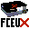
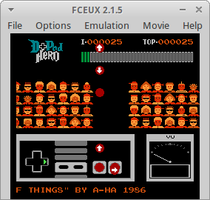
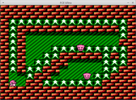
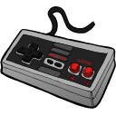
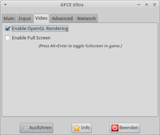
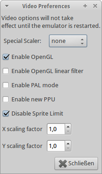
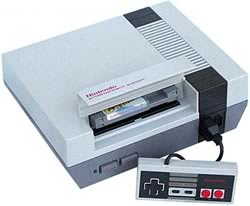

FCE Ultra
Dieser Artikel wurde für die folgenden Ubuntu-Versionen getestet:
Ubuntu 14.04 Trusty Tahr
Zum Verständnis dieses Artikels sind folgende Seiten hilfreich:

FCE Ultra ist ein Emulator für das Nintendo Entertainment System / Nintendo Family Computer (NES / Famicom), einer 8-Bit Videospielkonsole von Nintendo, und ist ein Fork von FCE  . Nachdem die Entwicklung einiger abgespalteter Projekte zum erliegen kam bündelte man 2006 die nützlichen Features unter einem Dach. FCEUX ist das Endresultat. Der Emulator unterstützt Soundausgabe, OpenGL und laufende Spiele können als Video aufgenommen werden.
. Nachdem die Entwicklung einiger abgespalteter Projekte zum erliegen kam bündelte man 2006 die nützlichen Features unter einem Dach. FCEUX ist das Endresultat. Der Emulator unterstützt Soundausgabe, OpenGL und laufende Spiele können als Video aufgenommen werden.
|  |  |
| D-Pad Hero | driar |
Installation¶
FCE Ultra¶
Zur Installation [1] folgendes Paket einspielen:
fceu (universe, FCE Ultra)
 mit apturl
mit apturl
Paketliste zum Kopieren:
sudo apt-get install fceu
sudo aptitude install fceu
Zur besseren Konfiguration empfiehlt es sich die grafische Oberfläche ebenfalls zu installieren.
GUI¶
Für die inoffizielle grafische Oberfläche zusätzlich:
gfceu (universe, GTK2)
mit apturl
Paketliste zum Kopieren:
sudo apt-get install gfceu
sudo aptitude install gfceu
Der Emulator ist anschließend im Menü unter "Spiele -> GFCE Ultra NES Emulator" zu finden. Im Homeverzeichnis legt das Programm den versteckten Ordner ~/.fceultra an.
FCEUX¶
Die aktuellere Version des Emulators ist über das folgende Paket zu installieren [1];
fceux (universe)
mit apturl
Paketliste zum Kopieren:
sudo apt-get install fceux
sudo aptitude install fceux
Der Emulator kann im Menü unter "Spiele -> FCEUX NES Emulator" gestartet werden. Nach dem ersten Start wird im Homeverzeichnis der versteckte Ordner ~/.fceux angelegt.
Bedienung¶
GFCE Ultra NES Emulator¶
Beim Start des Programms öffnet sich das Einstellungesmenü.
FCEUX¶
Die Möglichkeiten von FCEUX:
| FCEUX | |
| Menüpunkt | Beschreibung |
| "File" | Start von Spielen, Speichern von Spielständen, Laden von Musikdateien... |
| "Options" | Einstellungen |
| "Emulation" | Zur Emulation relevante Elemente (Reset, Game Genie, ...) |
| "Movie" | Steuerung der Aufnahme von Videosequenzen. |
Terminal¶
Beide Emulatoren können über das Terminal [2] gesteuert werden. So startet der folgende Befehl ein ROM im Vollbild unter FCE Ultra:
fceu -fs 1 dpadhero.zip
Ein Spiel im FCEUX NES Emulator startet man über den folgenden Befehl:
fceux dpadhero.zip
Mit
fceux -playmovie dpadhero.fm2 smb.zip
wird ein zuvor aufgenommenes Video abgespielt.
Hinweis:
Den Man-Pages sind alle Parameter zu entnehmen.

Steuerung¶
Entsprechungen des Controllers auf der Tastatur:
| Belegung | |
| NES Gamepad | Tastatur |
| Pfeile | ↑ , ↓ , ← und → |
| A | Alt |
| B | Strg |
| Select | Tab ⇆ |
| Start | ⏎ |
Konfiguration¶

FCE Ultra¶
| GFCE Ultra | |
| Menüpunkt | Beschreibung |
| "Main" | Pfad zum ROM / (De)Aktivierung des Sounds |
| "Input" | Konfiguration der Controller. |
| "Video" | OpenGL de/aktivieren - Start im Vollbildmodus |
| "Advanced" | Übergabe weiterer Paramteter aus der Kommandozeile. |
| "Network" | Einstellungen um ein Spiel zu hosten oder an einem Spiel teilzuehmen. |

FCEUX¶
Über den Menüpunkt "Options" erreicht man ein Fülle von Einstellungsmöglichkeiten:
| FCEUX | |
| Menüpunkt | Beschreibung |
| "Gamepad Config" | Konfiguration eines Controllers. |
| "Sound Config" | Feintuning zur Soundausgabe / Deaktivierung |
| "Video Config" | OpenGL-Unterstützung deaktivieren, Skalierung ändern, Filter wählen... |
| "Palette Config" | Farbpalette anwenden. |
| "Network Config" | Einstellungen (Benutzername, IP-Adresse, Port und Passwort) für ein Serverspiel. |
Tastenkürzel¶
| Tastenkürzel | |
| Taste(n) | Beschreibung |
| F2 | Cheatmodus (Start über das Terminal erforderlich). |
| F4 | Sprites ausblenden (toggle) |
| F5 | Spiel speichern |
| F7 | Spielstand laden |
| 0 - 9 | Auswahl des gespeicherten Spiels |
| F9 / F12 | Bildschirmfotos erstellen - Speicherort: ~/.fceultra/snaps / ~/.fceux/snaps |
| F10 | Reset (Soft) |
| F11 | Reset (Hard) |
| F12 | Sichern auf GFCEu |
| Alt + ⏎ | Vollbild- / Fenstermodus |



- Erstellt mit Inyoka
-
 2004 – 2017 ubuntuusers.de • Einige Rechte vorbehalten
2004 – 2017 ubuntuusers.de • Einige Rechte vorbehalten
Lizenz • Kontakt • Datenschutz • Impressum • Serverstatus -
Serverhousing gespendet von